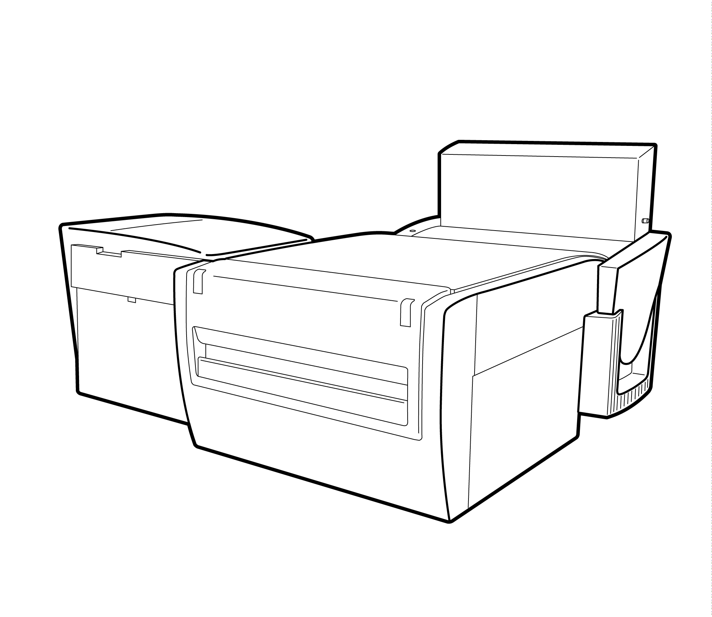
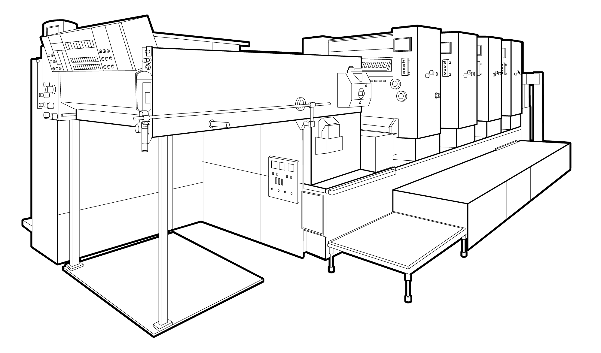
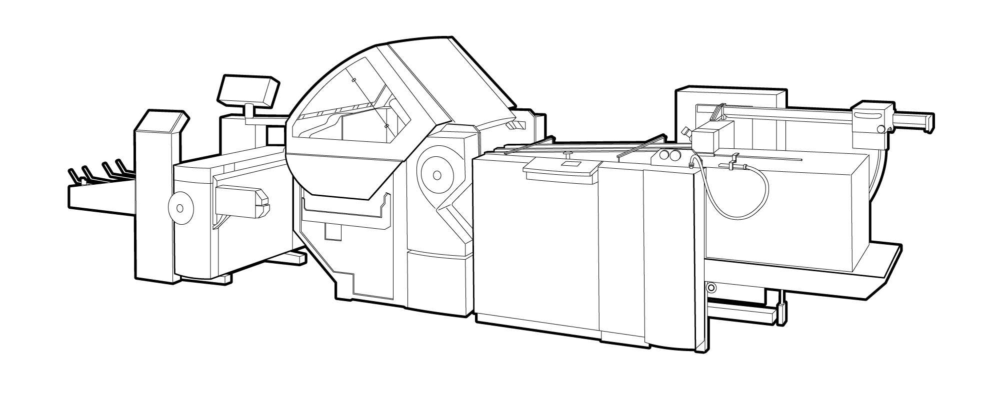

Оборудование
Машины
типографии
13 машин на трёх этапах производства — от вывода печатных форм до отделки тиража.

Допечатная подготовка
Heidelberg Prosetter P102
Система CtP выводит изображение на печатную форму и сразу передаёт пластину на проявку.
До 16 форм/ч · пластины до 811 × 1055 мм · до 3386 dpi

Печать
KBA Rapida 104
Четырёхкрасочная машина печатает на отдельных полноформатных листах.
Лист 72 × 104 см · красочность 4+0

- Mitsubishi Diamond 3000S-5+TC+ED
- Пять красок и лак за один проход. ИК-сушка, удлинённая приёмка, формат печати 71 × 102 см.
- Mitsubishi Diamond 3000LS-4
- Четырёхкрасочная листовая печать. Формат печати 71 × 102 см.
- Polygraph Zirkon 66
- Печатает с рулона шириной до 66 см и складывает газетные полосы А3 или 32-страничные книжные тетради А5.
Послепечатная обработка
Heidelberg Stahlfolder
Складывает книжные и брошюрные тетради, выполняет сложную фальцовку буклетов и биговку.
До 8 параллельных сгибов

- Brehmer RSA K73
- Комбинированная фальцовка книжных тетрадей и буклетов.
- Mueller Martini
- Скрепление термоклеем. Толщина блока до 60 мм, формат до А4+.
- Polymat
- Одна или две скобы и трёхсторонняя подрезка. До 7 000 брошюр/ч.
- Hans Mueller Grapha DSS
- Одна или две скобы и трёхсторонняя подрезка. До 5 000 брошюр/ч.
- KDFM-720
- Односторонняя горячая ламинация. Ширина рулона 72 см.
- Tsoi Yi
- Сплошное и выборочное УФ-лакирование.
- Тигельная машина
- Высечка изделий по контуру.